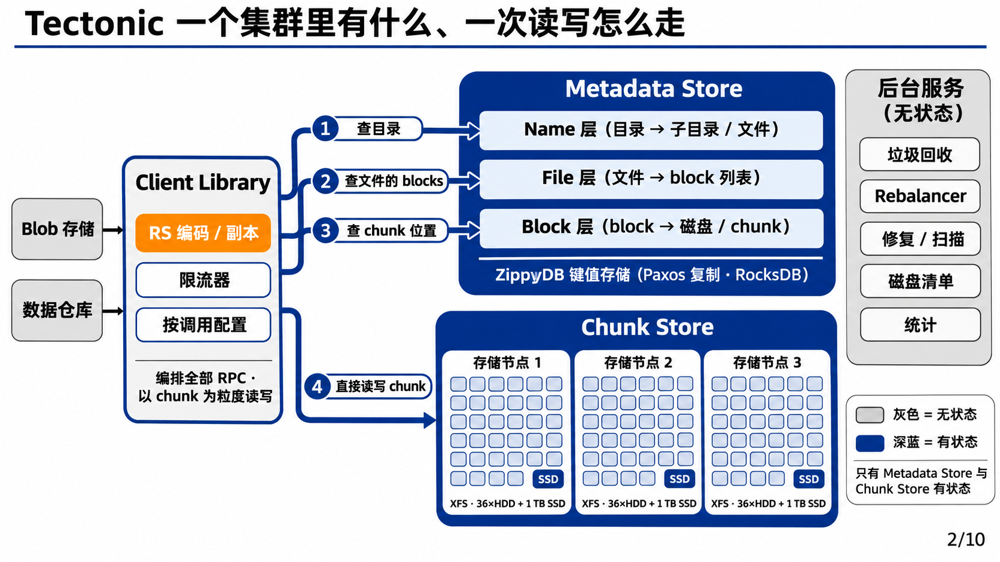
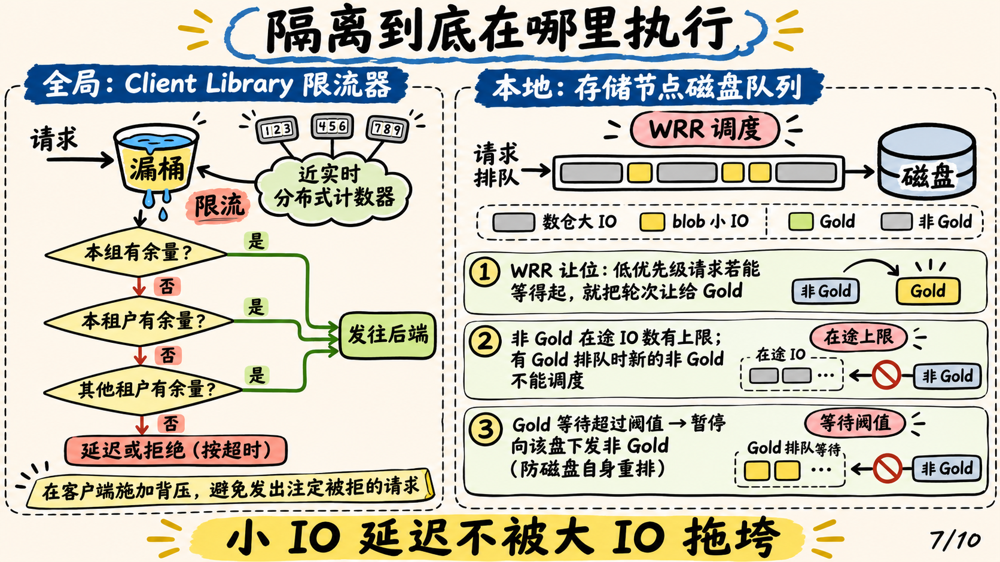
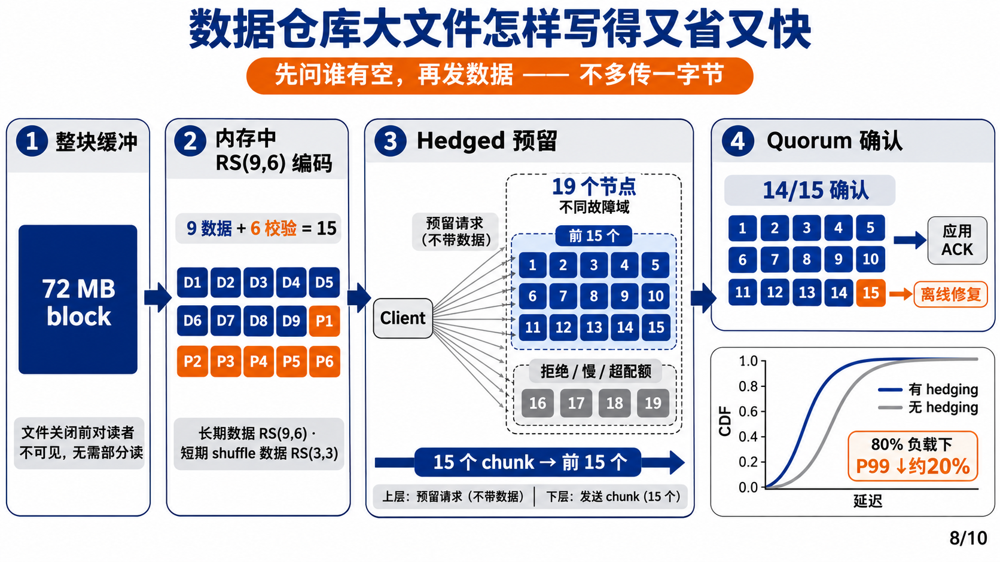
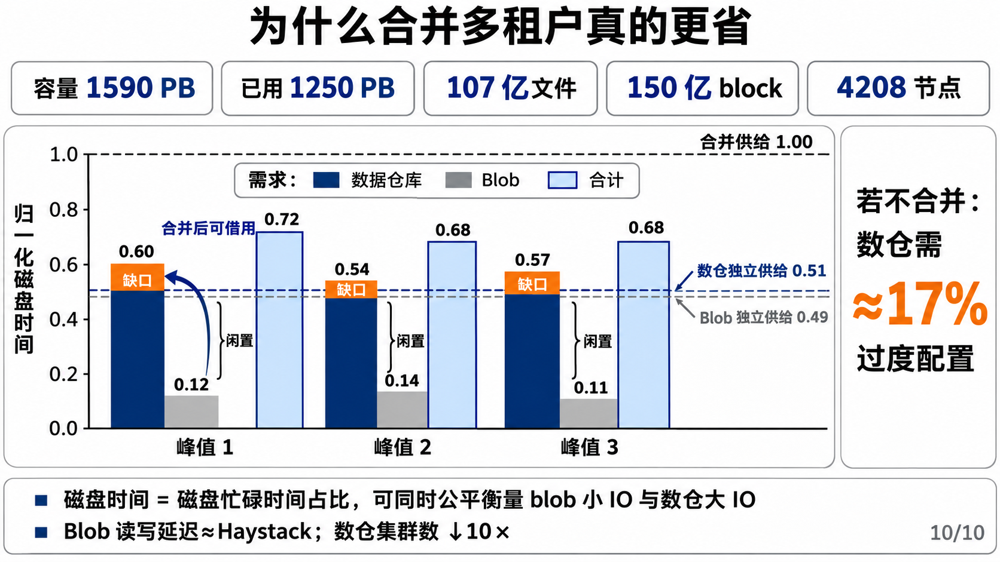

Tectonic 以"扁平 chunk 存储 + 分层哈希分片的 KV 化元数据 + 客户端按调用定制读写"构建单数据中心 EB 级多租户文件系统，替代 Haystack、f4 与数十个 HDFS 集群，在性能持平的前提下将数仓集群数降至 1/10、Blob 有效复制因子由 5.3× 降至约 2.8×。
大型互联网公司的存储通常按负载类型建设专用系统。论文 §2 描述了 Facebook 在 Tectonic 之前的两大租户：Blob 存储（照片、视频、消息附件等不可变对象，大小从数 KB 到数 MB，要求低延迟）与数据仓库（MapReduce 表、社交图快照、AI 训练数据，读平均数 MB、写平均数十 MB，优先吞吐）。前者由 Haystack（热数据，副本）与 f4（温数据，RS 编码）承担，后者由大量 HDFS 集群承担。论文称这种格局为一个由专用系统组成的"星座"（constellation）。
Blob 侧的问题源于硬件趋势。单盘 IOPS 长期不变而容量持续增长，单位容量可用 IOPS 下降，热数据系统 Haystack 由容量受限转为 IOPS 受限，只能超额采购磁盘。其理想有效复制因子为三副本叠加 RAID-6，即 3 × 1.2 = 3.6×，实际却升至 5.3×（§2.1）。与此同时，大量短生命周期媒体在迁往 f4 之前即被删除，导致越来越多数据以最昂贵的形态存放。f4 采用双数据中心 RS(10,4)，复制因子 2.8×，IOPS 有富余却无法借给 Haystack。
数仓侧的问题在于元数据。HDFS 以单台 NameNode 承载全部元数据，单集群规模受限，因此每个数据中心需要数十个 HDFS 集群（§2.2）。这带来两类代价：一是上层服务必须感知数据放置与跨集群迁移；二是数据集到集群的分配成为同时受容量与吞吐约束的二维装箱问题，超出单集群容量的数据集还需拆分，计算引擎随之复杂化。
已有的扩展路线各有不足（§7）。联邦化方案（HDFS Federation、Windows Azure Storage）把多个单元数据节点的集群拼接起来，仍保留装箱与跨命名空间迁移的代价；ADLS、HopsFS 采用元数据分层与分片，但按范围或局部性放置相关目录，存在子树热点；Ceph、FDS 以哈希定位数据，大规模下故障导致的映射更新与受控迁移成为瓶颈；Colossus 与 Tectonic 思路最接近，但其元数据依赖全局一致的 Spanner。
本文的出发点是：若能构建一个覆盖整个数据中心、同时服务多类租户的单一文件系统，便可消除资源孤岛并利用不同负载的峰谷互补。为此需解决论文 §1 明确提出的三项挑战：
"In building Tectonic, we confronted three high-level challenges: scaling to exabyte-scale, providing performance isolation between tenants, and enabling tenant-specific optimizations." —— §1
Reed-Solomon 编码。RS($r$, $k$) 将一个数据块切分为 $r$ 个等长数据分片，并计算 $k$ 个校验分片，任意 $r$ 个分片即可恢复原数据，最多容忍 $k$ 个分片丢失。其存储开销为：
$$\text{overhead}_{\mathrm{RS}(r,k)} = \frac{r+k}{r}, \qquad \mathrm{RS}(9,6)\approx 1.67,\quad \mathrm{RS}(10,4)=1.4,\quad \mathrm{RS}(3,3)=2$$该式说明每存储 1 字节逻辑数据需要多少字节物理空间；作为对照，三副本的开销为 3。论文中 Tectonic 采用 contiguous（连续）RS 布局：每个数据分片连续写到一个存储节点，小于分片大小的读只需一次磁盘 IO；仅当所需分片不可用时才触发需要读取 $r$ 个分片的重建读（§6.4）。
Quorum 写与 hedging。Quorum 写在 $n$ 个副本中有 $w$ 个成功即向客户端确认，以降低尾延迟；hedging 指向多于所需的节点发送请求、取最先完成者（Dean & Barroso, "The Tail at Scale"）。Copyset（Cidon et al., ATC '13）指存放同一数据块全部分片的磁盘集合；copyset 越多，多盘同时故障时丢失数据的概率越高，copyset 越少，单盘故障时的重建负载越集中。ZippyDB 是 Facebook 的分片键值存储，底层为 RocksDB，分片以 Paxos 复制，提供分片内线性一致读写与原子读-改-写事务，但不提供跨分片事务（§3.3）。
论文 Figure 2 给出 Tectonic 集群的组成：Chunk Store（存储节点集合）、Metadata Store（ZippyDB 加上无状态元数据服务）、Client Library，以及若干无状态后台服务（垃圾回收、rebalancer、修复与扫描、磁盘清单、统计等）。除 Chunk Store 与 Metadata Store 外，所有组件均无状态。Client Library 将应用的文件系统调用转换为对两个存储层的 RPC，是整个系统的编排者。集群规模上限为一个数据中心，跨数据中心的地理复制由租户自行实现（Figure 1）。
flowchart LR
APP["Tenant apps
Blob / Warehouse"] --> CL["Client Library
stateless, per-call config"]
CL -->|lookup dir| NL["Name layer
shard by dir_id"]
CL -->|list blocks| FL["File layer
shard by file_id"]
CL -->|locate chunks| BL["Block layer
shard by blk_id"]
NL --- KV[("ZippyDB
RocksDB + Paxos")]
FL --- KV
BL --- KV
CL -->|read or write chunks| CS[("Chunk Store
XFS, 36 HDD + 1 TB SSD")]
BG["Background services
GC, rebalancer, repair"] -.-> KV
BG -.-> CS

问题。若数据层理解文件或 block 语义，其元数据与状态会随数据量膨胀，且难以为不同租户定制写入方式。
做法。Chunk Store 是一个扁平的分布式对象存储，只存储 chunk，chunk 数量随存储节点数线性增长（§3.2）。每台存储节点配备 36 块 HDD 与 1 TB SSD，chunk 以文件形式存于本地 XFS，SSD 用于存放 XFS 元数据并缓存热 chunk。block 是持久性的逻辑单元，由若干 chunk 构成；每个 block 可独立选择 RS($r$, $k$) 编码或多副本，同一 block 的 chunk 放在不同故障域（如不同机架）。
为何有效。存储节点对上层抽象无感知，提供 get、put、append、delete、list、scan 等原语即可；文件与 block 的组织完全由 Client Library 借助 Metadata Store 完成。这一分离使"如何读写存储节点"可以按租户特化，而不触及文件系统管理逻辑，是后文第三项创新的前提。
与已有方法的差异。论文 §6.6 报告，Chunk Store 第一版采用了业界常见的 block group 设计（若干相同冗余方案的 block 合并编码、映射到固定节点组）以减少元数据，结果在生产中过于僵化："with only 5% of storage nodes unavailable, 80% of the block groups became unavailable for writes"，且无法支持 hedged quorum 写与 quorum append。改为逐 block 独立放置后，元数据量上升，由可扩展的 Metadata Store 承担。
问题。单节点元数据是 HDFS 规模受限的根源；而简单地把元数据分片，又可能因目录局部性形成热点。数仓作业的典型访问模式是在短时间内读取同一目录下的大量文件，或一批名称相近的目录（§3.3、§6.3）。
做法。Tectonic 将元数据解耦为三层，并分别按内部 ID 哈希分片（论文 Table 1）：
| 层 | 键 | 值 | 分片键 | 映射 |
|---|---|---|---|---|
| Name | (dir_id, subdirname) / (dir_id, filename) | subdir_info, subdir_id / file_info, file_id | dir_id | 目录 → 子目录、文件（展开） |
| File | (file_id, blk_id) | blk_info | file_id | 文件 → block 列表（展开） |
| Block | blk_id | list<disk_id> | blk_id | block → 磁盘（chunk） |
| Block（反向） | (disk_id, blk_id) | chunk_info | blk_id | 磁盘 → block（展开） |
"展开"（expanded）指把列表中的每一项存为以真实键为前缀的独立键，例如目录 d1 下的文件 foo、bar 存为 (d1, foo) 与 (d1, bar) 两个键。增删一项无需读出并重写整个列表，列目录则为一次前缀扫描；对于包含数百万文件的目录，这显著降低了创建和删除的开销。
为何有效。论文给出的核心论断是：
"Unlike ADLS, Tectonic hash-partitions each metadata layer rather than using range partitioning. Hash partitioning effectively avoids hotspots in the metadata layer." —— §1
机制上有两点。其一，层间分离使"搜索与列出目录"（Name 层）与"读取文件数据"（File、Block 层）落在不同分片：同一目录的直接列表必然在一个分片上，但其两个子目录的列表大概率位于不同分片。其二，Block 层承担约三分之二的元数据操作，哈希使 block 定位信息与其所属目录或文件无关，均匀分布于全部分片（§3.3）。§6.3 进一步论证：若 File 层采用范围分区，同一目录的文件会集中于同一分片，而每个作业的 File 层操作远多于 Name 层操作，热点将显著放大。
此外，系统允许 seal（封存）block、文件与目录；被封存对象的内容不再变化，其元数据可在元数据节点和客户端缓存而不破坏一致性。唯一例外是 block 到 chunk 的映射，因为 chunk 可能在磁盘间迁移，读时若发现缓存过期则刷新。论文还记录了一项与数仓的协同设计：list-files 接口同时返回文件名与文件 ID，计算引擎的编排器将 ID 分发给 worker，worker 按 ID 直接打开文件，避免对同一目录分片的集中访问（§6.3）。
与已有方法的差异。ADLS、HopsFS 同样将元数据分层并存于分片存储，但会把目录树中相关部分的元数据放在同一分片，从而保留了子树局部性；Tectonic 主动放弃这种局部性以换取负载均衡（§7）。代价在 §6.5 中体现：递归列目录需要访问大量分片，Tectonic 因此不提供递归 list 与 du。
由于 ZippyDB 只提供分片内事务，Tectonic 的一致性保证限定为：数据操作（append、read）的读后写一致；涉及单个对象的文件与目录操作（create、list）；以及源与目标位于同一父目录的 move。文件条目存放于父目录所在的 Name 分片，因此同目录内的创建、删除和重命名是强一致的（§3.3）。
跨目录移动目录分两阶段完成：先在新父目录创建链接，再删除旧父目录中的链接；被移动目录保存指向父目录的反向指针，用于检测进行中的移动，保证同一目录同时只有一个移动操作。跨目录移动文件则通过"复制文件对象（复用底层 block，不搬数据）再删除源条目"实现。
论文专门分析了一个竞态：文件 f1 重命名为 f2 的同时，另一进程以同名覆盖方式创建 f1。重命名步骤为 R1（Name 层，shard($d$)：读 f1 的 fid）、R2（File 层，shard(fid)：将 f2 加为 fid 的 owner）、R3（Name 层，shard($d$)：原子地建立 f2 → fid 并删除 f1 → fid）；创建步骤为 C1（File 层：新建 fid_new）、C2（Name 层，shard($d$)：f1 → fid_new）。若 C1、C2 发生在 R1 与 R3 之间，R3 会删除新建立的映射。解决方式是 R3 在分片内事务中验证 f1 指向的文件对象自 R1 以来未被修改。
sequenceDiagram
participant R as rename f1 to f2
participant N as Name shard d
participant F as File shards
participant C as create f1
R->>N: R1 read fid of f1
R->>F: R2 add f2 as owner of fid
C->>F: C1 new fid_new
C->>N: C2 map f1 to fid_new
R->>N: R3 txn check f1 unchanged since R1
N-->>R: abort, mapping changed
写入并发方面，Tectonic 规定每个文件只有一个写者（§3.4）。进程以追加方式打开文件时，在文件元数据中写入一个 write token，此后的元数据更新必须携带匹配的 token；第二个进程打开同一文件会生成新 token 覆盖旧值，成为唯一写者，并在打开时封存前一写者打开的 block。单写者语义使 Client Library 无需在多个写者之间串行化，可以并行写各存储节点并实施 hedging。
问题。多租户系统需要同时满足三项要求：各租户至少获得独占时的资源份额；租户之间性能隔离；空闲资源能被弹性利用以维持高利用率。资源若按租户管理则过粗（同一租户内既有生产流量也有后台 GC），按应用管理则过细（数百个应用）。
做法。论文首先区分两类资源（§4.1）：存储容量为 non-ephemeral 资源，按租户设定硬配额，无自动弹性，调整为手动操作；IOPS 与元数据查询容量为 ephemeral 资源，需要实时自动管理。对后者，Tectonic 引入中间粒度：
"Instead of managing resources among hundreds of applications, Tectonic only manages resources among tens of traffic groups." —— §1
每个集群约 50 个 TrafficGroup，组内应用的资源与延迟需求相近；每个 TrafficGroup 被赋予一个 TrafficClass：Gold（延迟敏感）、Silver（普通）或 Bronze（后台）。每个租户获得集群瞬时资源的保证配额，再细分给其 TrafficGroup。空闲资源先按 TrafficClass 降序分给本租户的其他组，剩余部分再按同样顺序分给其他租户的组。借用产生的流量取双方中较低的等级，记借出方等级为 $c_{\text{lend}}$、借入方等级为 $c_{\text{borrow}}$，则：
$$c_{\text{effective}} = \min\left(c_{\text{lend}},\; c_{\text{borrow}}\right), \qquad \text{Gold} > \text{Silver} > \text{Bronze}$$该规则保证资源借用不会改变节点上各等级流量的比例，从而使节点能够持续满足每个 TrafficClass 的延迟目标（§4.1）。
执行分全局与本地两层。全局层面，Client Library 内的限流器以近实时分布式计数器统计每个租户和 TrafficGroup 在最近一个短时间窗口内的需求，实现一种改进的漏桶算法：请求先在本组查找余量，再依次查找本租户其他组、其他租户，找到则发往后端，否则视超时设置延迟或拒绝，从而在客户端施加背压。本地层面，元数据节点与存储节点以加权轮询（WRR）调度，若某 TrafficGroup 的请求将超出配额则暂时跳过。存储节点另有三项措施保障 Gold 请求的延迟：低等级请求若在高等级请求之后仍有足够时间完成，则让出本轮；限制每块盘上非 Gold IO 的在途数量，当存在待处理 Gold 请求且达到上限时阻止新的非 Gold 请求；若某 Gold 请求在一块盘上等待超过阈值，则暂停向该盘调度非 Gold 请求，以应对磁盘自身的 IO 重排（§4.1）。

与已有方法的差异。论文 §7 明确指出，其多租户机制与文件系统及租户协同设计，"does not aim to achieve optimal fair sharing"，与追求最优公平共享的方案（如 Pisces、Crystal、Microfuge）相比更易于实现性能隔离。访问控制方面采用基于 token 的逐层授权，令牌校验在内存中完成，耗时数十微秒（§4.2）。
第四项创新建立在前述两点之上：Client Library 以 chunk 为粒度直接操作数据，且配置按每次调用生效，而非像 HDFS 那样按目录配置持久性（§5）。逐调用配置产生的额外元数据由可扩展的 Metadata Store 承担。论文以数仓与 Blob 两个租户展示其效果。
数据仓库：整块 RS 编码与 hedged quorum 写（§5.1）。数仓文件为一次写多次读，文件关闭后才对读者可见，此后不可变。因此应用可以把写缓冲到 block 大小，在内存中做 RS 编码后直接写数据与校验 chunk；长期数据通常为 RS(9,6)，map-reduce shuffle 等短期数据通常为 RS(3,3)。文件的各 block 可并行异步写入，全部完成后一次性更新文件元数据。整块 RS 写虽然需要向 15 块盘发 IO，但每个 IO 较大，瓶颈在带宽而非 IOPS，总写入量也远小于三副本。
为降低尾延迟，Tectonic 采用 quorum 写的一个变体：
"Instead of sending the chunk write payload to extra nodes, Tectonic first sends reservation requests ahead of the data and then writes the chunks to the first nodes to accept the reservation." —— §5.1
以 RS(9,6) 为例，设 $h$ 为额外预留的节点数（论文取 $h=4$），则预留、写入与确认的节点数分别为（推导，参数取自 §5.1）：
$$n_{\text{reserve}} = r + k + h = 19,\qquad n_{\text{write}} = r + k = 15,\qquad n_{\text{ack}} = r + k - 1 = 14$$即向 19 个不同故障域的节点发送预留请求，把 15 个 chunk 写给最先接受预留的 15 个节点，14 个成功即向客户端确认，第 15 个若失败则离线修复。确认时 block 已有 14 个分片落盘，仍可容忍 $k-1=5$ 个分片丢失。预留步骤类似 hedging，但避免了向因资源不足或请求方超出份额而会拒绝请求的节点传输数据，因此不增加额外的数据 IO。

Blob 存储：一致的 partial-block quorum append 与 seal 后转码（§5.2）。Facebook 存储数万亿个 blob，若每个 blob 一个文件，元数据不可承受；Tectonic 将多个 blob 追加到日志结构文件中，以 blob ID 到文件内位置的映射定位。Blob 通常远小于 block，且处于用户请求路径上，因此以小的、多副本的部分 block 追加写入：三副本中两个节点写盘成功即确认。短暂的持久性下降可以接受，因为该 block 很快会被重新编码，且 Blob 存储会在另一数据中心写第二份副本。
Quorum append 的难点是慢副本会使各副本长度不一。Tectonic 的解法是两条规则：只有创建 block 的写者可以追加；每次追加完成后，先把追加后的 block 大小与校验和提交到 block 元数据，再向应用确认。由此得到如下不变式：
"If block metadata reports a block size of S, then all preceeding bytes in the block were written to at least two storage nodes." —— §5.2
记 $\mathrm{size}(b)$ 为元数据中 block $b$ 的大小，$\mathrm{rep}(o)$ 为持有偏移 $o$ 处字节的存储节点数，该不变式可形式化为：
$$\mathrm{size}(b) = S \;\Longrightarrow\; \forall\, o < S:\ \mathrm{rep}(o) \ge 2$$读者最多读到偏移 $S$，因此任何已确认的写对后续读可见，且可见的数据至少有两份。block 封存后，Client Library 将其从副本转码为 RS(10,4)。若在每次追加时直接做 RS 编码，一次小写需要 14 个 IO（对比副本的 3 个），而小写受 IOPS 限制；seal 后转码只需在 14 个目标节点上各做一次大 IO，兼得副本的低延迟与 RS 的空间效率。
| 维度 | 数仓写（§5.1） | Blob 写（§5.2） | HDFS（对照） |
|---|---|---|---|
| 写入单位 | 整 block（如 72 MB） | 部分 block 追加 | 流式追加 |
| 冗余方案 | RS(9,6)；短期 RS(3,3) | 三副本 → seal 后 RS(10,4) | 按目录配置 |
| 确认条件 | 15 个 chunk 中 14 个成功 | 3 副本中 2 个成功且元数据已提交大小 | 流水线副本全部成功 |
| 尾延迟手段 | 预留式 hedging（19 选 15） | quorum append | 无 |
| 配置粒度 | 逐调用，由 Client Library 决定 | 逐目录 | |
后台服务与元数据一样分层，逐分片工作（§3.5）。各元数据层之间的垃圾回收器清理多步操作失败或惰性删除留下的不一致；rebalancer 识别需要迁移的 chunk（硬件故障、扩容、机架下线），修复服务借助 Block 层的磁盘到 block 反向索引，按"Block 层分片 × 磁盘"并行完成数据搬迁。
Copyset 方面，若 block 的分片可任意放置，copyset 数量会接近组合上限 $\binom{N}{r+k}$（$N$ 为磁盘数），多盘同时故障几乎必然导致某些 block 不可用；反之 copyset 过少则单盘故障时重建负载集中在少数对等盘上。Tectonic 的折中是让 Block 层与 rebalancer 在内存中保存约 100 个所有磁盘的一致洗牌序列，copyset 取自某个序列中连续的磁盘，具体用哪个序列由 block ID 决定，从而把 copyset 总数维持在固定量级（§3.5）。由于磁盘成员不断变化，该约束是尽力而为的。
论文的评估以生产数据为主，辅以一组测试集群实验。§6 的全部生产结果来自一个代表性多租户集群，承载 Blob 存储与数仓两个租户，二者分别占已用空间的约 49% 与 51%，观测窗口为三天（Figure 4）。Figure 3a 的 hedging 实验在负载约 80% 的测试集群上进行；Figure 3b、3c 比较 Tectonic 上的 Blob 读写延迟与 Haystack。论文没有与其他文件系统在相同硬件上的对照实验，也没有针对单项机制的系统性消融。
| 指标（Table 2） | 数值 | 解读 |
|---|---|---|
| 容量 | 1590 PB | 单集群接近 1.6 EB，为 HDFS 单集群（数十 PB 量级，§7）的数十倍 |
| 已用字节 | 1250 PB | 快照时约占容量的 70% |
| 文件数 | 10.7 B | 验证了分层哈希元数据可承载百亿级文件 |
| block 数 | 15 B | block 级独立放置带来的元数据规模 |
| 存储节点 | 4208 | 按每节点 36 块 HDD 计，约 15 万块磁盘（推导） |
论文首先说明计量口径。Blob 请求小而受 IOPS 限制，数仓请求大而受带宽限制，单独使用 IOPS 或带宽都无法公平衡量两类负载。论文以磁盘时间（disk time）为瓶颈资源，即磁盘处于忙碌状态的时间比例（§6.2）。设时间窗口 $T$ 内某盘完成的 IO 集合为 $\mathcal{I}$，第 $i$ 个 IO 的服务时间为 $t_i$：
$$U_{\text{disk}} = \frac{1}{T}\sum_{i \in \mathcal{I}} t_i, \qquad \text{例：}\ T = 1\,\text{s},\ |\mathcal{I}| = 10,\ t_i = 50\,\text{ms} \;\Rightarrow\; U_{\text{disk}} = 0.5$$该式把寻道与传输时间统一为"占用磁盘多久"，使小 IO 与大 IO 可比。Table 3 以集群已用空间对应的总磁盘时间归一化，给出三个日峰值下两租户的需求，以及各自若独立部署时可获得的供给：
| 租户（Table 3） | 独立供给 | 峰值 1 | 峰值 2 | 峰值 3 |
|---|---|---|---|---|
| 数据仓库 | 0.51 | 0.60 | 0.54 | 0.57 |
| Blob 存储 | 0.49 | 0.12 | 0.14 | 0.11 |
| 合计 | 1.00 | 0.72 | 0.68 | 0.68 |
记租户 $j$ 的独立供给为 $S_j$、时刻 $t$ 的需求为 $D_j(t)$。独立部署时数仓需要满足 $\max_t D_{\text{WH}}(t) \le S_{\text{WH}}$，整合后只需满足总量约束（推导）：
$$\max_t \sum_j D_j(t) \;\le\; \sum_j S_j, \qquad \text{overprovision}_{\text{WH}} = \frac{\max_t D_{\text{WH}}(t)}{S_{\text{WH}}} - 1 = \frac{0.60}{0.51} - 1 \approx 17.6\%$$前一式说明整合把逐租户的峰值约束放松为总量约束；后一式由 Table 3 复算出数仓单独部署时所需的超额配置，与论文给出的"约 17%"一致。三天内数仓的每个日峰值都超过其独立供给，而 Blob 峰值需求仅为其供给的约四分之一。Figure 4a、4b 显示了两类流量形态的差异：数仓由超大作业触发规律性的尖峰，Blob 流量平稳可预测。整合的收益正来自这种负载形态的互补，而非来自单一负载的优化。

Figure 3a 显示，在约 80% 吞吐利用率的测试集群上，hedged quorum 写使 RS(9,6) 编码、72 MB 整块写的 99 分位延迟改善约 20%；论文指出集群负载越高，hedging 越有效。Figure 3b、3c 表明 Tectonic 上 Blob 的写延迟（使用 quorum append）与读延迟与 Haystack 相当，用于支撑"通用性没有带来显著性能代价"的论断。需要注意，这两项比较只给出分布曲线，没有说明负载条件是否相同。
元数据方面，生产中每个分片的上限为 10 KQPS，这一限制来自当前元数据节点的资源隔离机制（§6.3）。Figure 4c 给出三天内各分片峰值 QPS 的 CDF：File 层与 Block 层所有分片均低于上限；Name 层约 1% 的分片因承载极热目录而触及上限，这部分请求在退避后重试成功。层级越高，每分片 QPS 的分布越宽，因为高层分片聚合了同一租户更多的操作。该结果同时支持了两个设计：哈希分片使 File、Block 层负载均匀；Name 层的残余热点则通过客户端重试与 §6.3 所述的"list 返回文件 ID"协同设计化解。
论文没有提供传统消融实验，但 §6.4–§6.6 记录了若干设计变更及其原因，可视为生产环境中的"消融"证据。其一，Chunk Store 由 block group 改为逐 block 放置，原因是 5% 节点不可用即导致 80% block group 不可写。其二，Metadata Store 最初未分离 Name 层与 File 层，目录查找与文件 block 列举访问同一分片，导致热点引发的不可用，促成进一步解耦。其三，为防止"重建风暴"，系统将重建读限制在全部读的 10% 以内。设重建读比例为 $p$，RS(10,4) 下直接读为 1 个 IO、重建读约为 10 个 IO，则每次读的期望 IO 数为（推导）：
$$E[\text{IO per read}] = (1-p)\cdot 1 + p \cdot r = 1 + p\,(r-1), \qquad p \le 0.1,\ r = 10 \;\Rightarrow\; E \le 1.9$$该式说明不加约束时，过载引发的重建会把单次读成本放大到最多 10 倍，进而造成更多节点过载，形成正反馈；把 $p$ 限定在 10% 后，读放大有了上界，代价是需要调参。论文认为 10% 通常足以覆盖生产中的磁盘、主机与机架故障，并避免了为最坏情况超配磁盘。作为对照，条带化 RS 让所有读都走重建，故障时 IO 数不变，但正常读的成本显著上升，因此未被采用。
完整性方面，论文 §6.6 给出一个形式化的校验规则。设数据 $D$ 的校验和为 $C_D$，经内存变换 $F$ 得到 $D' = F(D)$，$G$ 为 $F$ 的逆变换：
$$D' = F(D),\qquad \text{accept } D' \iff C\big(G(D')\big) = C_D$$即任何变换（如 RS 编码、加密）之后，都用逆变换还原并比对原始校验和，即使 $G$ 的计算代价较高。动机是在数千台机器、每日海量读写的规模下，"in-memory data corruption is a regular occurrence"；在进程内和进程间都校验，可防止损坏传播到节点故障后重建出的 chunk 中。
适用边界。Tectonic 面向 HDD 介质、以吞吐和容量为主的负载。论文 §6.7 列出未迁移的服务：软件包部署等引导类服务不能依赖 Tectonic 所依赖的 KV、配置与部署系统；图存储等 KV 负载需要 SSD 级低延迟，Tectonic 尚未针对其优化。许多中小应用也不直接使用 Tectonic，而是经由 Blob 存储或数仓等大租户间接使用，地理复制、跨数据中心容量管理等职责同样由租户承担。这是一种明确的关注点分离：文件系统只负责单数据中心内的容错。
简单与性能的取舍。论文 §6.4 写道："Tectonic's design generally prioritizes simplicity over efficiency." 两处例外都与规模直接相关：限制重建读比例，以及让客户端直连存储节点而不经过前端代理。后者避免了每秒数 TB 数据的额外一跳，代价是 Client Library 的缺陷会成为应用二进制的缺陷；对于地理上远离集群的远程请求，编排往返代价过高，系统改为转发给同数据中心的无状态代理（§6.4）。
对后续工作的启示。Tectonic 将"元数据状态下沉到成熟的分片 KV、服务无状态"的路线推广到 EB 级生产环境，并留下了明确的问题：只有分片内事务时，如何提供跨目录原子 rename，如何在哈希打散后恢复路径解析与递归操作的效率。后续工作沿这两个方向展开，例如 InfiniFS 的推测性路径解析、CFS 缩小临界区的元数据事务、Mantle 的集中式索引节点，以及本仓库 FileScale、λFS 等精读中讨论的方案。Tectonic-Shift（ATC '23）则在其上为 ML 训练增加 flash 缓存层，对应了 §6.7 所述 Tectonic 未覆盖的低延迟需求。
| 系统 | 元数据组织 | 跨分片/跨目录语义 | 数据层 |
|---|---|---|---|
| HDFS / GFS | 单元数据节点，内存 | 原子（单节点） | 块副本，规模数十 PB |
| HDFS Federation / WAS | 多个独立命名空间拼接 | 跨命名空间需复制数据 | 共享或分区 |
| ADLS / HopsFS | 分层，按范围或局部性分片 | 依赖底层事务 | ADLS 使用 WAS 联邦块存储 |
| Colossus | 论文称基于 Spanner | 全局一致数据库支持 | 客户端直连，多 EB |
| Ceph | 哈希定位数据（CRUSH） | — | 缺乏受控迁移 |
| Tectonic | 三层解耦，各层哈希分片于 ZippyDB | 仅分片内事务；跨目录 move 非原子 | 扁平 chunk，显式映射，支持受控迁移 |
注：Colossus 一行依据 Tectonic 论文 §7 的表述。Google 官方博客称 Colossus 文件系统元数据存于 Bigtable，本仓库 Colossus 精读对此有讨论。
作者自述的局限。其一，元数据延迟上升（§6.5）。HDFS 的元数据操作在单节点内存中完成，而 Tectonic 打开文件需要访问 Name 与 File 两层并经过网络；数仓计算引擎原先在计算结束后逐个串行 rename 文件，迁移后不得不并行化以掩盖单次 rename 的延迟。其二，哈希分片的副作用。递归列目录需要访问大量分片，Tectonic 不提供递归 list，只能由租户在客户端封装；也没有 HDFS 式的 du，目录用量由周期性汇总提供，可能过期。其三，适用范围有限（§6.7），低延迟 KV 负载与无依赖的引导服务不在其覆盖范围内。
笔者的判断。第一，评估的外部有效性有限。§6 的结论几乎全部来自单个代表性集群三天的观测，没有在相同硬件上与 HDFS、Haystack 等基线的受控对比，Figure 3b、3c 也未说明两系统的负载条件是否一致；"性能与专用系统相当"更接近工程结论而非可复现的实验结论，而系统与代码均不公开进一步限制了复现。第二，若干关键参数缺乏敏感性分析。hedging 的额外预留数 $h=4$、重建读上限 10%、约 100 个洗牌序列、每分片 10 KQPS 上限，论文都只给出取值而未讨论其选取依据及在不同负载下的表现。第三，非原子的跨目录 move 对 Facebook 的两大租户足够，但对依赖"rename 即提交"的通用分析框架（如部分 Hadoop 输出提交协议）构成语义缺口，迁移成本被转嫁给上层。第四，多租户机制以 TrafficGroup 的人工划分为前提，租户需要为每个应用选择合适的组；论文未讨论划分不当或负载漂移时的影响。
Tectonic 的贡献可以归结为三点：以分层、哈希分片、状态下沉到分片 KV 的元数据设计，配合扁平的 chunk 存储，实现单数据中心 EB 级、百亿文件的单一集群；以 TrafficGroup 与 TrafficClass 降低资源管理的基数，配合客户端全局限流与节点本地调度，实现多租户的隔离与空闲资源共享；以客户端驱动、逐调用配置的读写路径，使同一系统对数仓（整块 RS 加预留式 hedging）和 Blob（副本 quorum append 加 seal 后转码）分别达到专用系统的性能。生产数据表明，整合使数仓集群数降至 1/10，Blob 有效复制因子由 5.3× 降至约 2.8×，并以 Blob 的空闲磁盘时间吸收了数仓约 17% 的峰值缺口。
从方法论上看，Tectonic 的价值不在于提出新的单项算法：分层元数据、copyset、hedging、quorum 写均有先例。其价值在于证明这些技术可以组合为一个在 EB 级生产环境中稳定运行的系统，并如实记录了为此付出的语义与延迟代价。跨分片原子操作、哈希打散后的目录级聚合查询，以及低延迟介质上的多租户隔离，仍是其后续工作需要回答的问题。